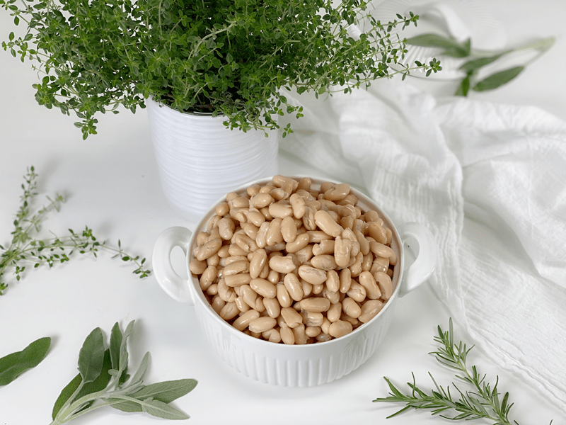
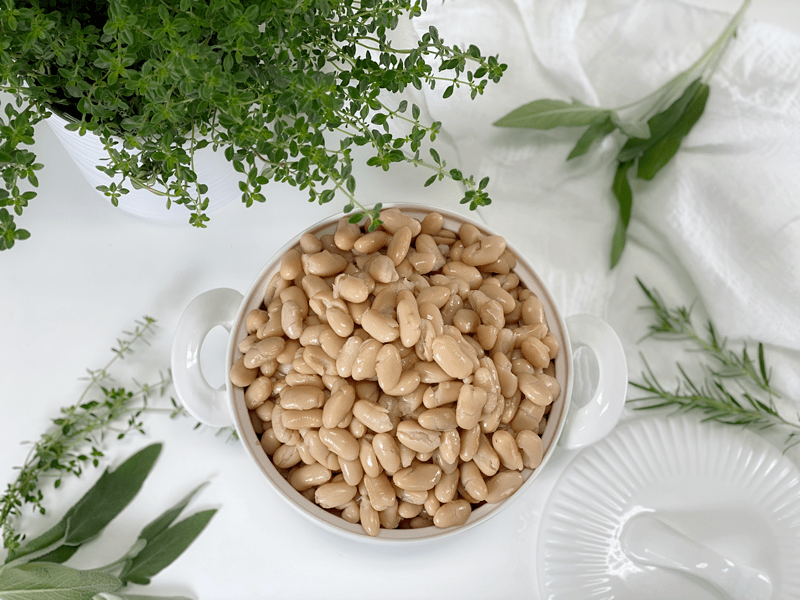
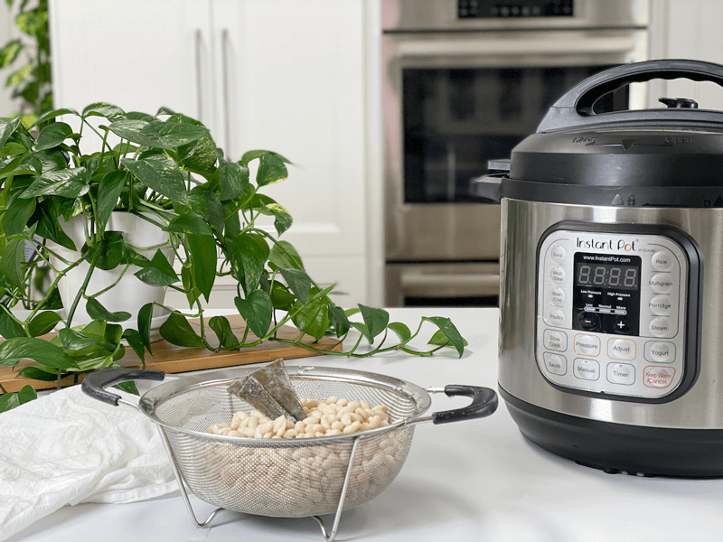
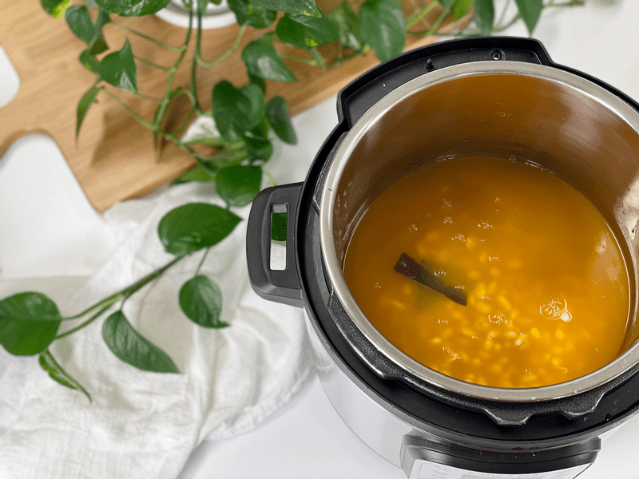
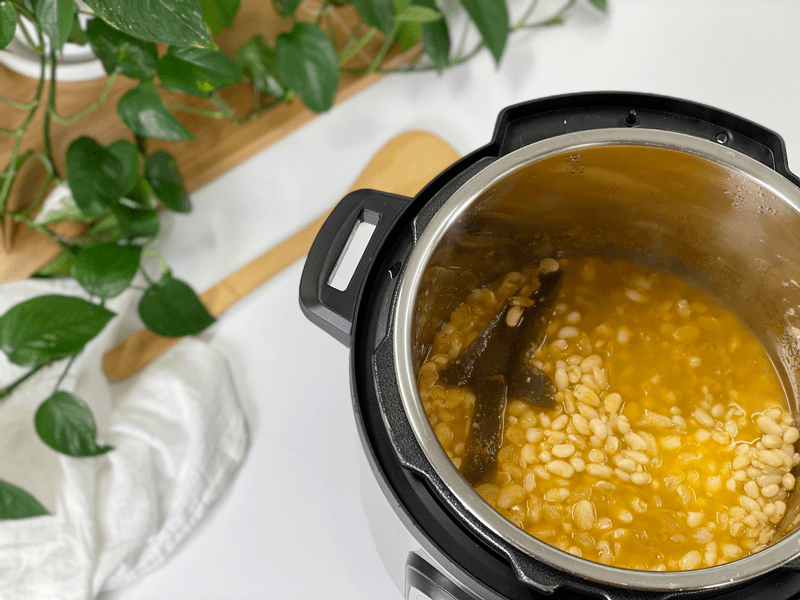
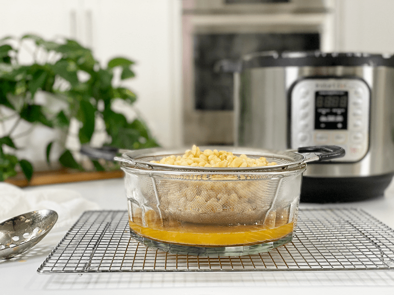
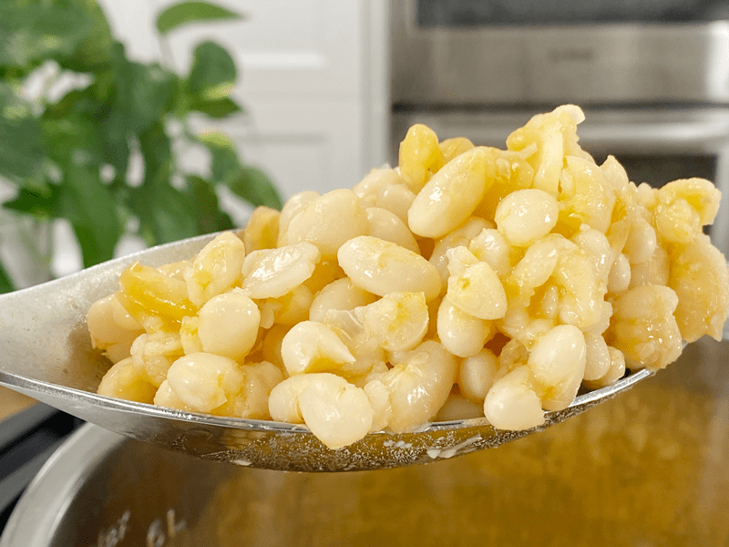

White Beans | Soaked, Instant Pot | Stove Top
Good day, my virtual friend. For today’s recipe, I am using my Instant Pot, which is my go-to method, but I will also be providing the stove-top method as well. The cook time suggestions are for beans that have been soaked–I will explain more about that below. The length of time you cook beans will determine their use. Use a reduced cooking time if you want them whole and firm. Tack on a few minutes for a softer bean that you can mash or blend. I use these in my Creamy Dijon Dressing, which is oil-free and nut-free.

Why Cook Your Own Beans
First off, it’s less expensive! I could stop right there because I think it is wise to be good stewards of our money. Dried beans cost far less per pound than canned and can be stored for a year or more. Another upside to cooking your own beans means less waste–no cans to recycle or throw away. Plus, home-cooked food always tastes better than canned!
Ways to Combat Digestive Disturbances
- When cooking beans, wait until they are tender but not entirely done to add a splash of apple cider vinegar and a couple of teaspoons of salt to the pot. The apple cider vinegar breaks down indigestible sugars to help digestion and also brightens the flavor of the beans without the need for excess salt.
- Add a strip of kombu seaweed to the pot. Kombu is a type of sea kelp that is rich in vitamins and minerals, including potassium, calcium, and iodine. Another great benefit is that when kombu is added to the cooking water in a pot of beans, it helps make legumes more digestible by tenderizing the proteins that can cause gas. It also cuts down the cooking time.
- Soak the beans prior to cooking. Soaking any type of legume before cooking renders its nutrients more digestible by breaking down and neutralizing phytic acid, which is an anti-nutrient that prevents the absorption of calcium, zinc, and other minerals. It also helps to remove some of those indigestible sugars that cause flatulence. Use the soaking water to water your garden.
- Another reason to consider soaking the beans is that they will cook with a more even, smoother texture than unsoaked beans. In my experience, unsoaked beans can have an uneven texture: some end up soft, some stay firm, and some have split skins.
- Adding baking soda to the soak water of dried beans before cooking (about 1/16 teaspoon per quart) significantly decreases the content of the raffinose family of sugars. (1)
- By cooking your own beans, you have all these wonderful tools to help prevent digestive disturbances.
Why I Add Kombu Seaweed and What It Is
Kombu is a type of sea kelp that is rich in vitamins and minerals, including potassium, calcium, and iodine. It is high in vitamins A, C, E, B1, B2, B6, and B12. It is a great ingredient to keep stashed in your pantry, as it makes beans more digestible by tenderizing the proteins that can cause gas. It has a very mild flavor and won’t affect the taste of the beans. So next time you make a pot of oats, rice, vegetable broth, or beans, add a strip into the pot and reap the nutritional benefits of seaweed. For more fun reading, click (here).

Batch-Cooking Beans
One of the main concerns I repeatedly hear about eating a whole-food diet is that it is time-consuming. True–and yet not so true. You can make food prep as complicated or uncomplicated as you want. Batch cooking saves a lot of time in the kitchen. Cook a large pot of beans at one time and freeze in 1 1/2 cup portions (equivalent to about one 15-ounce can). Thaw overnight in the refrigerator or by setting them in a pan of water for 1 hour.
- Add beans to a vegetable or pasta salad to make it a protein-rich main dish.
- Mash cooked beans and spread on a soft tortilla, heat, and eat! Include other ingredients such as vegan cheese, lettuce, tomato, salsa.
- Dress them with a bit of quality olive oil and a sprinkling of flaky sea salt.
- Use them in soups and stews.
Pro Tips
- Avoid adding anything acidic (tomatoes, vinegar, lemon/lime juice, wine, etc.) to the pot until the beans have cooked, as these ingredients can impede the softening of the beans’ outer skin if added too soon. The acid binds to the beans’ seed coat and makes it more impervious to water, as well as making the coat harder.
- Never discard the liquid that the beans cooked in. It’s full of flavor and is great to add to other soup recipes.
- Since the beans soak up liquid while they cook (rehydrate), why not have them soak up flavor too? Use vegetable stock instead of water.
- If you love the idea of batch cooking, try this trick. I typically make one pound of dried beans at a time, which makes approximately 6 cups of cooked beans. I will automatically freeze 3 cups (broken down into three 1-cup servings), and the other 3 cups go in the fridge. If you do this each time you make a batch of beans, you will have an incredible stock in the freezer that will carry you through for months!
Kitchen Math
The following equivalents will vary based on the size of the bean.
- 2 cups of dried beans = 1 pound of cooked beans
- 1 pound dried beans = Up to 6 cups of cooked beans
- 1 cup dried beans = 3 cups of cooked beans
Make Every Bit Count
- Soak the beans before cooking with them to improve digestion.
- For added nutrients and flavor, cook the beans in vegetable broth.
- Add a strip of kombu seaweed to the cooking water for added nutrients.
- Eat at the table. Avoid eating in front of the TV, computer, or with a fork in one hand and a cell phone in the other. Eating while detracted leads to overfilling your belly, eating too quickly, and doesn’t give you the opportunity to savor each bit.
 Ingredients
Ingredients
- 2 cups dried white beans
- 4 cups vegetable broth or water
Preparation
Instant Pot Method
- Wash, clean, and soak the beans, then rinse them.
- In the Instant Pot, add 1 pound of dried beans and water.
- Rule of thumb: Don’t fill the pot more than halfway full with liquid. This is a precaution against overflow due to foaming during cooking.
- Secure the lid and turn the sealing valve to closed. If you leave it open, the pot can’t come up to pressure.
- Select “Manual,” adjust the timer to 6-8 minutes on “High”…that’s it.
- If you decide to skip the soaking process, cook them for 30-35 minutes.
- Once the machine beeps, let it Natural Release for 20 minutes, then turn the pressure valve to “Venting” to let out any remaining pressure.
- Should you strain the cooking liquid?
- If you plan on storing the beans in the fridge to eat through the week, leave them in the cooking water.
- If you are freezing them, strain the cooking liquid and freeze only the beans.
- Save the cooking liquid and use it for your next soup base.
- Blend some of the cooking liquid with the beans to make Refried Northern Beans.
Stove-Top Method
- Spread dried beans on a baking sheet. Remove any small stones, dirt pieces, or withered beans.
- Prep work: Soak the beans. Rinse the dried beans, put them in a large bowl and cover with a triple amount of water (for bean expansion), and leave to soak overnight on the countertop.
- Drain and rinse the beans and put them into a pot with either vegetable broth or water.
- Bring the beans to a boil, then cover and simmer them gently for 20 to 30 minutes or until the beans are tender but not mushy.
- Partially cook the beans if planning to cook again, like in soups or stews.
- Fully cook the beans when you need soft beans immediately, in dishes like hummus or refried beans. The cook time will increase.
Storing Cooked Beans
Fridge
- When it comes to storing hot foods in the fridge, we have a 2-hour window. Large amounts of food should be divided into small portions and put in shallow containers for quicker cooling in the refrigerator that is set to 40 degrees (F) or below. If you leave food out to cool and forget about it after 2 hours, throw it away due to the growth of bacteria. (source)
- They should keep well for at least 4 or 5 days.
- Refrigerated beans tend to thicken, so reheat them slowly, adding more water if necessary or desired.
Freezer
- Place the beans in freezer-safe jars, making sure to cover them with the cooking liquid.
- They can be stored for up to 3 months or longer.
- Be sure to leave about an inch of room in the jar to account for expansion when the liquid freezes.
-

-
Drain the soaked beans.
-

-
Add the beans, kombu, and cooking liquid to the pot.
-

-
This is what it looks like cooked.
-

-
Drain the liquid (saving it for a soup base) and use the beans as intended.
-

-
Here is a close-up. These cooked a little longer for blending purposes.
© AmieSue.com